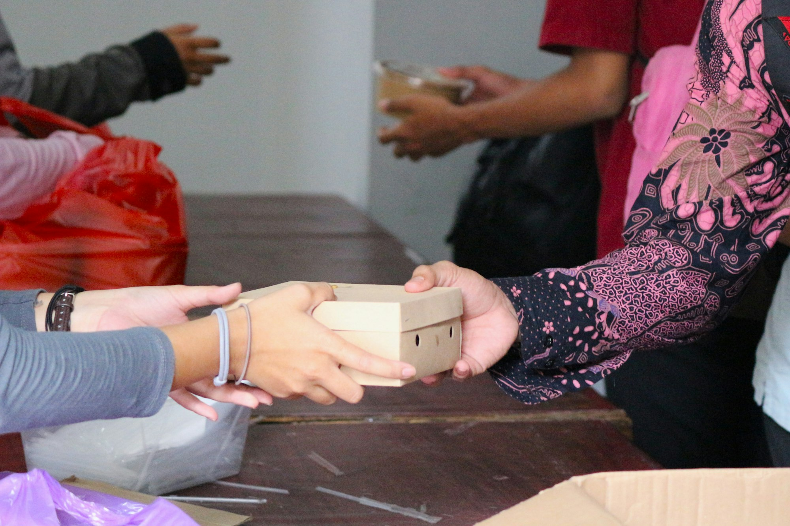

Suma tu color al mosaico.

01 Dona
Tu aporte, en ayuda concreta.
Aún no hemos habilitado los canales oficiales de donación: se publicarán aquí al concluir la inscripción de la fundación.
Muy pronto
Cuenta bancaria, Yape y Plin a nombre de la Fundación Atenea. Nunca recibiremos donaciones en cuentas personales.
Pago con Mercado Pago
Cuando se active, podrás donar con tarjeta de forma segura desde esta página. La fundación nunca ve los datos de tu tarjeta.
Cada aporte, documentado
Emitiremos una constancia por cada donación y publicaremos cómo se usó.
En línea Tarjeta
Dona en un minuto, de forma segura.
El pago se procesa en Mercado Pago. Si todavía no está habilitado, te lo diremos al intentar donar.
Aviso: no pedimos donaciones por llamadas ni a cuentas personales. Solo valen los canales publicados en esta página.
02 En qué se usará tu aporte
Cada sol tiene destino.
Estas son las áreas a las que irán los recursos, de acuerdo con el estatuto. Publicaremos los montos reales cuando existan.
Medicamentos y traslados
Apoyo a personas enfermas sin recursos para que no abandonen su tratamiento.
Atención profesional
Asesoría legal, psicológica y social gratuita, a mujeres y varones.
Nutrición y cuidado
Prevención de anemia, refuerzo escolar y espacios seguros.
Ayuda humanitaria
Kits de alimentos, higiene y abrigo para familias afectadas.
03 Voluntariado
Dona tu tiempo y tu talento.
Profesionales y estudiantes de salud, derecho, psicología, educación y comunicación pueden sumarse a campañas, acompañamiento hospitalario, refuerzo escolar y asesorías gratuitas.
04 Alianzas
Empresas con propósito.
Construyamos programas de responsabilidad social con impacto real y medible en Piura y en todo el país, o contrata nuestras consultorías: lo recaudado se destina íntegramente a los programas.
05 Preguntas frecuentes
Resolvemos tus dudas.
¿La ayuda de la fundación tiene algún costo?
No. Toda la orientación y el apoyo que brindamos son gratuitos y confidenciales. Nunca te pediremos dinero a cambio de ayuda.
¿Cómo sé que mi donación llega a quien la necesita?
Publicaremos estados financieros y una memoria anual con resultados, personas atendidas y uso de los fondos. Solo recibiremos donaciones por los canales oficiales publicados en esta web, que aún no están habilitados.
¿La fundación está formalmente constituida?
La Fundación Atenea está en trámite de inscripción registral (SUNARP y Consejo de Supervigilancia de Fundaciones). Cuando concluya, publicaremos los documentos en la sección de Transparencia.
¿Quién puede pedir ayuda?
Mujeres y varones en situación de violencia o abandono, niñas y niños en riesgo, personas enfermas sin recursos y familias en situación de vulnerabilidad, desde Piura y a distancia en todo el Perú. Escríbenos y evaluamos tu caso sin compromiso.
¿Cómo puedo ser voluntaria, voluntario o aliado?
Escríbenos desde la página de contacto contándonos tu profesión o la de tu organización. Buscamos profesionales de salud, derecho, psicología, educación y comunicación, además de empresas e instituciones.
· Boletín
Buenas noticias desde Piura.
Una vez al mes: historias, avances y formas concretas de ayudar. Sin spam.